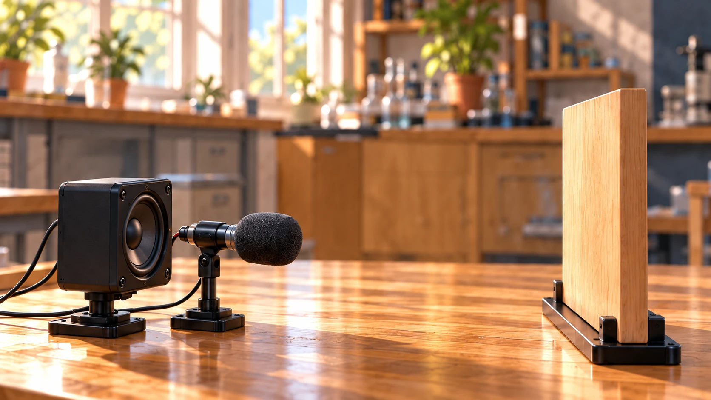
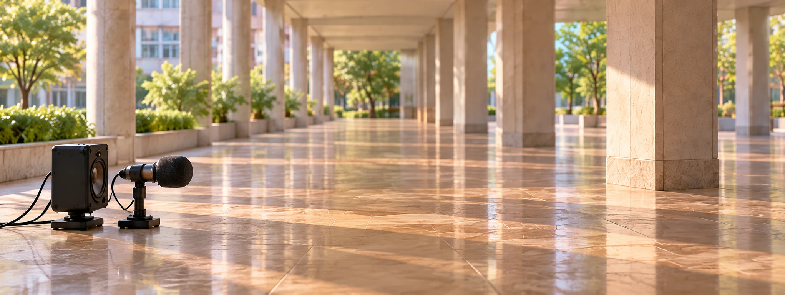
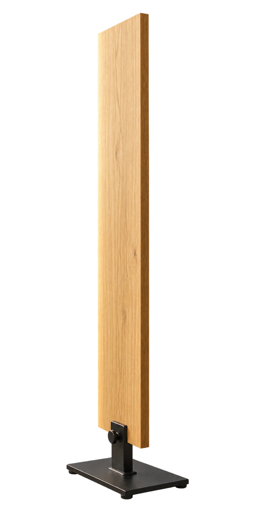

聲音碰到反射板，會怎麼走？
聲波反射：觀察一次發聲的返回
讓喇叭只發聲一次，觀察聲音遇到反射板後的變化。
這塊板子，也會把聲音送回來嗎？
我們先讓喇叭發出一次短音，留意板子那邊有沒有聲音返回。

點喇叭，觀察一次發聲如何返回。
- 1發出短音
- 2到達板面
- 3反射傳回
準備好，點喇叭或按鈕開始。
喇叭只發聲一次。聲音碰到板面後，一部分反射回來，被接收器收到。
牆越遠，返回的聲音就越晚嗎？
路程與時間：比較遠近與返回時間
同樣的聲速，一起發聲，比較哪一組先收到。
牆遠一點，回來的聲音會晚多少？
讓兩組一起發聲，看看哪個接收器先收到。


接收時間紀錄 （秒）
準備好，兩組可一起發聲。
聲速相同，牆越遠，聲音去、回的路程都更長，所以回來得更晚。
知道回來的時間，怎麼算牆有多遠？
往返測距
先看聲音走過的總路程，再取其中的一半。
如果知道聲音回來花多久，是不是能算出牆有多遠？
距離＝聲速 × 往返時間 ÷ 2
準備好，可播放或直接比較；重來保留目前條件。
題給聲速340m/s，固定牆面、同介質、近似同位置發射／接收。數值是教學條件，不是現場量測；動畫放慢8倍。
聲速乘上往返時間，得到的是去、回兩段加起來的路程。兩段一樣長，所以還要除以二，才是牆的距離。
看不到海底，聲納怎麼知道深度？
聲納測深
船底探頭向下發出聲脈衝，再接收海底反射回來的聲音。
海底看不見，也能靠回來的聲音知道它有多深嗎？
準備好，可播放或直接比較；重來保留目前條件。
主動聲納、固定海底、垂直聲路；深度從探頭起算，忽略吃水差。1500m/s為題給近似，動畫放慢8倍。聲納可使用超聲波，但並非所有聲納都只能用超聲波；可聽聲音只是提示音。
把水中的聲速乘上往返時間，再除以二，就能估算探頭到海底的距離。聲路垂直時，這個距離才是我們量的深度。
沒有聽見第二聲，就沒有反射嗎？
室內反射
比較清楚分開的返回聲，與多個反射聲密集到達的拖尾。
有時在空房間說話，沒有清楚的第二聲，卻覺得聲音拖得長長的。這也是反射嗎？
較晚的一次回聲
直接聲之後，有一個相隔較久的反射聲。
密集的室內反射
多條聲路先後抵達，混成較長的拖尾。
圖中每條反射聲路較長，抵達時間也比直接聲晚。
準備好，可播放或直接比較；重來保留目前條件。
同一個合成短音加入不同延遲，示意回聲與殘響；下一區再用同一句話比較吸音前後。時間軸以直接聲抵達為0；聲源與聽者分開，不能把兩聲的時間差直接套往返測距公式。
是呀，室內的聲音會沿好幾條路反射回來。反射聲若密集到達，就可能混在一起形成殘響；沒有聽出第二聲，不代表沒有反射。
怎麼讓室內說話更清楚？
減少干擾
固定同一語句、聲源和聽者，只比較吸音處理前後的反射聲。
如果回來的聲音讓說話變得模糊，有辦法讓它少一點嗎？
處理前
直接聲仍在，後續反射較強。
吸音處理後
直接聲保留，後續反射減弱。
目前比較：未處理牆面，反射聲較強。
準備好，可播放或直接比較；重來保留目前條件。
同一句離線合成語音「聽聽看，這裡的聲音清楚嗎？」作比較。吸音板為定性示意，非特定產品或實測係數。兩段保留相同直接聲，只減弱延遲反射；吸音不等於阻擋牆外聲音穿入的隔音，也不會使所有聲音消失。
適當的吸音處理能減弱反射，減少語句後面的拖尾。聲納需要接收有用的回波，室內談話則常希望少一點反射干擾。
單元小測：這份回波紀錄告訴我們什麼？
用路徑與紀錄判斷，不需要記住聲速，也不必開啟聲音。
資料依據與模型說明
依教育部自然科學領綱Ka-Ⅳ-4及說明4-1；參考康軒115課程計畫、翰林公開回聲應用資料及校本課程計畫。時間、波前及室內反射是教學示意。